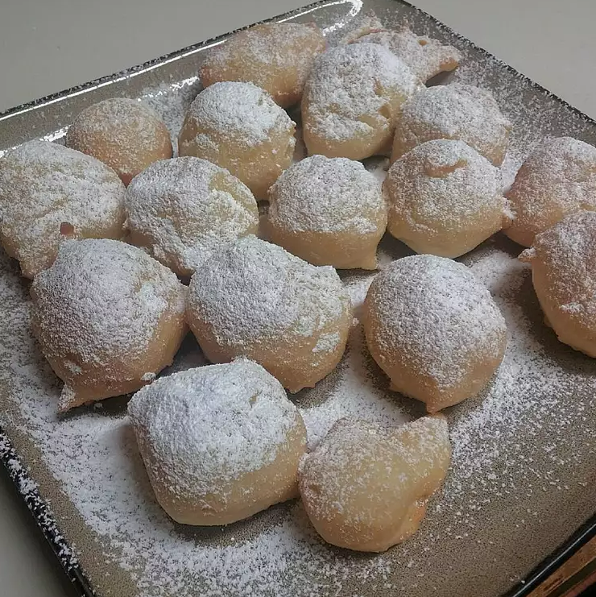

Zeppole

Description
Zeppole are Italian donuts made with ricotta cheese that are traditionally served warm in paper bags with lots of
confectioners' sugar at Italian festivals or carnivals.
Ingredients
- 2 quarts vegetable oil for frying
- 1 cup all-purpose flour
- 2 teaspoons baking powder
- 1 ½ teaspoons white sugar
- 1 pinch salt
Steps
- Heat oil in a deep fryer to 375 degrees F (190 degrees C).
- Combine flour, baking powder, sugar, and salt in a medium saucepan. Stir in eggs, ricotta cheese, and
vanilla. Mix gently over low heat until combined. Batter will be sticky.
- Drop by tablespoons into the hot oil a few at a time. Zeppole will turn over by themselves. Fry until golden
brown, about 3 or 4 minutes. Drain in a paper sack and dust with confectioners' sugar. Serve warm.
Homepage